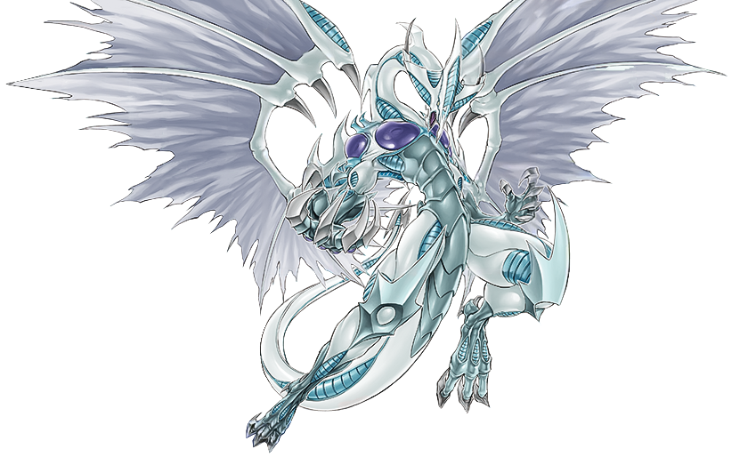

Hola soy Eduardo Martinez y esta es mi pagina donde vamos
a agregar cosas como palabras por ejemplo nombres de animales y nombres de personas
Estas son mis aptitudes personales
Conocimiento de lenguajes de programacion
Para mayores informes puedesvisitar la pagina de mi LinkedIn Personal
Si te gustan los anime y juegos de cartas puedes dar click en esta imagen
